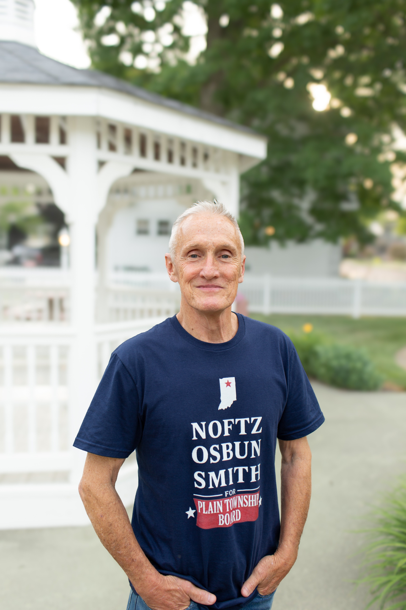

Candidate for Plain Township Board

Robert is a retired former financial services manager. Robert served as Vice President & Branch Manager for Charles Schwab & Co in Campbell, California, Tucson, Arizona, and Honolulu, Hawaii.
He lives in Leesburg, where his family has had a home for over 80 years. Robert has been the treasurer for the Kosciusko County Democratic Party since 2024. He attended Warsaw High School, and earned a B.A. degree from Hanover College and Masters degree from The University of Denver.
Robert lived in Argentina for several years, where he learned Spanish, and gained appreciation and respect for other cultures. Like many people these days, he is a full-time caregiver for an elderly parent. Both of his parents retired from the Uniroyal factory in Warsaw.
Robert understands the struggles of working families. He is determined and ready to go to work for the people of Plain Township!